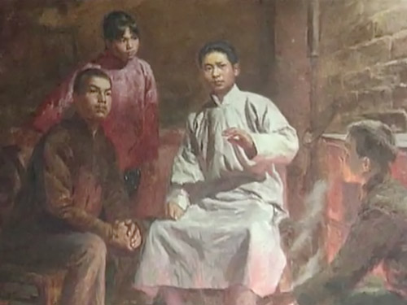
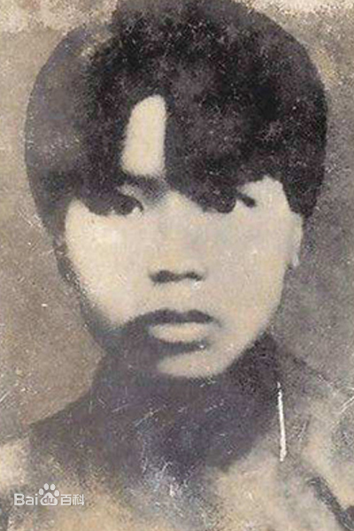
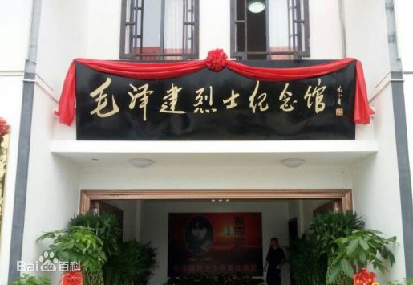

历史人物
衡山朱凤——毛泽建
-

毛泽建
湖南湘潭韶山人，从小过继给毛泽东的父母做女儿。1921年春，随毛泽东到长沙，进崇实女子职业学校和长沙自修大学补习学校学习。1923年加入中国共产党，同年秋考入衡阳省立第三女子师范学校。1926年夏，受党指派与丈夫、共产党员陈芬在衡阳开展农民运动。1927年11月担任中共衡山县委组织和妇运委员。1928年初，参加朱德、陈毅领导的湘南起义，担任耒阳县游击队队长。 -

人物事迹
1928年5月的一次战斗中，毛泽建和陈芬先后被敌人逮捕，敌人杀害了陈芬。不久，毛泽建被井冈山根据地的红军救出。面对敌人的猛烈反扑，为了不拖累同志们，身怀有孕和负伤的毛泽建坚决要求留在当地隐蔽，产后，不幸再次被捕。敌人抓到毛泽建后，以她“系毛泽东之妹，马日前后，均负共党要职”，把她从耒阳押到衡阳，后又押到衡山，使用封官许愿和酷刑拷打，梦想从这位共产党员、女游击队长身上捞到我党的重要机密和军事行动计划，但毛泽建始终坚贞不屈。她在狱中写下了“誓死为党”，“毛泽东是大有希望的，革命一定会胜利”等血书表达自己对党的赤胆忠诚。 -

后世纪念
2017年6月29日，毛泽东主席的堂妹，毛泽建烈士纪念馆如期开馆，衡山县委，县政府相关领导及社会各界代表，学校学生参加了开馆仪式。中国关心下一代红伟爱国主义教育基地，北京红色伟业党总支书记、湖南省第十、第十一届政协委员、毛泽建烈士的侄女毛小青同志为纪念馆题写了馆名。
返回目录